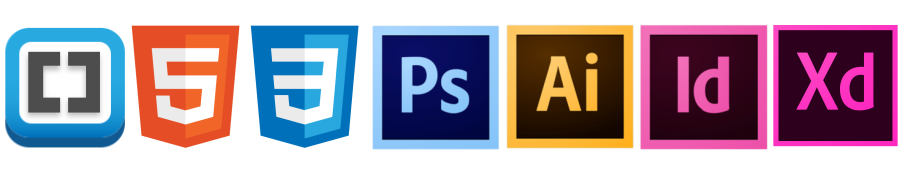

Værktøjer brugt i opgaven:
I denne opgave blev vi fordelt i grupper, målet var at udvikle en App-prototype for KEAs studerende. Prototypen skulle pitches for KEAs ledelse. Hvis ideen var god og konceptet godt, ville ledelsen bakke op om appen. Vi fik rådighed til en masse nye midler der skulle hjælpe os på vej i processen. Underviserne pointerede at dette var en øvelsescase, så der var plads til at få afprøvet hele processen, før den rigtige virksomhedscase gik i gang nogle uger efter.
Ud fra vores Paintpoint udarbejdede vi 3 ideer der hver skulle indeholde:
- Et storyboard
- 2. En paper prototype
- En Test af paper prototypen
- Liste over features og activities
Testen blev filmet så vi bagefter kunne skrive interessante kommentarer og observationer ned. Disse observationer brugte vi til at finde fælledstemaer med de problemstillinger vi selv havde og hvad vi skulle arbejde videre med.
Liste over features og storyboard
Vi valgte KEA skema app
Formål med vores APP Det er besværligt som studerende på Kea, at tjekke sin ugeplan. Det skal nu blive lettere med denne app. App’en skal gøre det muligt at tjekke informationer derhjemme eller når man er på farten. Med få klik skal den studerende let kunne danne sig et overblik over sin ugeplan, lektier, afleveringer og grupperoversigt. Brugeren downloader app’en Kea Skema på sin mobil. Første gang logger man på med sin studiemail, derefter er der autologin. App’en giver et overblik over dagens skema, med mulighed for at swipe mellem dagene og f.eks. forberede sig til næste dag. Hvis man har glemt at tjekke lektier, afleveringer eller hvilken gruppe man er kommet i, kan man ubesværet danne sig et overblik ved at trykke på de tilgængelige knapper der leder brugeren hen til den ønskede funktion. Hvis den studerende vil danne sig et overblik pga. af arbejde, ferie eller lign. findes der også en kalenderoversigt for hele semesteret.
Prøv vores App-Prototype her: